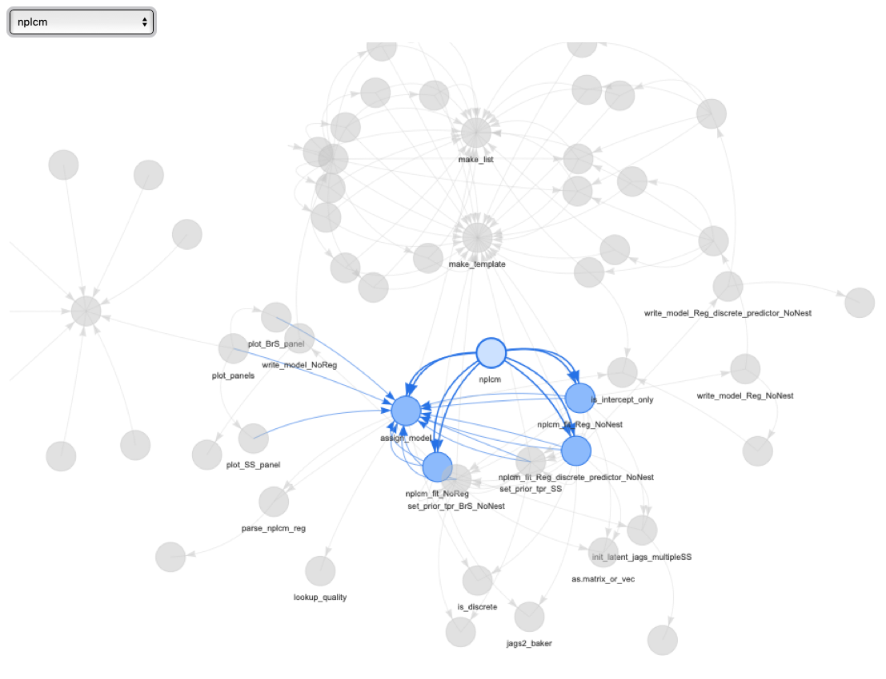

baker: Bayesian Analysis Kit for Etiology Research
An R Package for Fitting Bayesian Nested Partially Latent Class Models


Maintainer: Zhenke Wu, zhenkewu@umich.edu
Source Code: Please click here for source code on GitHub.
Issues: Please click here to report reproducible issues.
Vignette: Please click here to read the latest long-version vignette; a short version can be found here.
Package website: Please click here for a website generated by pkgdown, which contains html format of the package manual (“Refence”).
References: If you are using baker for population and individual estimation from case-control data, please cite the following papers:
| Citation | |
|---|---|
| partially Latent Class Models (pLCM) | Wu, Z., Deloria-Knoll, M., Hammitt, L. L., Zeger, S. L. and the Pneumonia Etiology Research for Child Health Core Team (2016), Partially latent class models for case–control studies of childhood pneumonia aetiology. J. R. Stat. Soc. C, 65: 97–114. |
| nested pLCM | Wu, Z., Deloria-Knoll, M., Zeger, S.L.; Nested partially latent class models for dependent binary data; estimating disease etiology. Biostatistics 2017; 18 (2): 200-213. |
| nested pLCM regression | Wu, Z., Chen, I (2021). Probabilistic Cause-of-disease Assignment using Case-control Diagnostic Tests: A Hierarchical Bayesian Approach. Statistics in Medicine 40(4):823-841. |
| Application | Maria Deloria Knoll, Wei Fu, Qiyuan Shi, Christine Prosperi, Zhenke Wu, Laura L. Hammitt, Daniel R. Feikin, Henry C. Baggett, Stephen R.C. Howie, J. Anthony G. Scott, David R. Murdoch, Shabir A. Madhi, Donald M. Thea, W. Abdullah Brooks, Karen L. Kotloff, Mengying Li, Daniel E. Park, Wenyi Lin, Orin S. Levine, Katherine L. O’Brien, Scott L. Zeger; Bayesian Estimation of Pneumonia Etiology: Epidemiologic Considerations and Applications to the Pneumonia Etiology Research for Child Health Study, Clinical Infectious Diseases, Volume 64, Issue suppl_3, 15 June 2017, Pages S213–S227 |
| Primary PERCH Analysis | The PERCH Study Group (2019). Aetiology of severe hospitalized pneumonia in HIV-uninfected children from Africa and Asia: the Pneumonia Aetiology Research for Child Health (PERCH) Case-Control Study. The Lancet 394(10200): 757-779. |
| Software paper | Chen I, Shi Q, Zeger SL, Wu Z (2022+) baker: An R package for Nested Partially-Latent Class Models. |
There are a number of scientific papers on global health and infectious diseases that have used the model and some the software (in its earlier versions). Some notable examples are listed below:
Notable References using baker (model and/or software) |
|
|---|---|
| 1 | Kubale et al. (2023). Etiology of acute lower respiratory illness hospitalizations among infants in four countries. Open Forum Infectious Diseases, ofad580. |
| 2 | Saha SK et al. (2018). Causes and incidence of community-acquired serious infections among young children in south Asia (ANISA): an observational cohort study. The Lancet 392(10142):145-159. |
Installation
# install.packages("devtools",repos="https://cloud.r-project.org")
devtools::install_github("zhenkewu/baker")Note:
- run
install.packages("pbkrtest")forR(>=3.2.3)if this package is reported as missing. - Windows User: use
devtools::install_github("zhenkewu/baker",INSTALL_opts=c("--no-multiarch"))instead if you see an error messageERROR: loading failed for 'i386'(Thanks Chrissy!).
Vignettes
devtools::install_github("zhenkewu/baker", build_vignettes=TRUE) # will take extra time to run a few examples.
browseVignettes("baker")Graphical User Interface (GUI)
# install.packages("devtools",repos="http://watson.nci.nih.gov/cran_mirror/")
devtools::install_github("zhenkewu/baker")
shiny::runApp(system.file("shiny", package = "baker"))For developers interested in low-level details, here is a pretty awesome visualization of the function dependencies within the package:
library(DependenciesGraphs) # if not installed, try this-- devtools::install_github("datastorm-open/DependenciesGraphs")
library(QualtricsTools) # devtools::install_github("emmamorgan-tufts/QualtricsTools")
dep <- funDependencies('package:baker','nplcm')
plot(dep)You will get a dynamic figure. A snapshot is below:

Analytic Goal
- To study disease etiology from case-control data from multiple sources that have measurement errors. If you are interested in estimating the population etiology pie (fraction), and the probability of each cause for individual case, try
baker.
Comparison to Other Existing Solutions
- Acknowledges various levels of measurement errors and combines multiple sources of data for optimal disease diagnosis.
- Main function:
nplcm()that fits the model with or without covariates.
Details
- Implements hierarchical Bayesian models to infer disease etiology for multivariate binary data. The package builds in functionalities for data cleaning, exploratory data analyses, model specification, model estimation, visualization and model diagnostics and comparisons, catalyzing vital effective communications between analysts and practicing clinicians.
-
bakerhas implemented models for dependent measurements given disease status, regression analyses of etiology, multiple imperfect measurements, different priors for true positive rates among cases with differential measurement characteristics, and multiple-pathogen etiology. - Scientists in Pneumonia Etiology Research for Child Health (PERCH) study usually refer to the etiology distribution as “population etiology pie” and “individual etiology pie” for their compositional nature, hence the name of the package.
Platform
- The
bakerpackage is compatible with OSX, Linux and Windows systems, each requiring a slightly different setup as described below. If you need to speed up the installation and analysis, please contact the maintainer or chat by clicking thegitterbutton at the top of this README file.
Connect R to JAGS
Mac OSX (10.11+)
- Use Just Another Gibbs Sampler (JAGS)
- Install JAGS 4.3.2 (or 4.2.0 - currently it is slightly slower for 4.3.2, which was updated to be compatible with R 4.3.x); Download here
- Install
R; Download from here - Fire up
R, runRcommandinstall.packages("rjags") - Run
Rcommandlibrary(rjags)in R console; If the installations are successful, you’ll see some notes like this:
>library(rjags)
Loading required package: coda
Linked to JAGS 4.x.0
Loaded modules: basemod,bugs- Run
Rcommandlibrary(baker). If the packagekscannot be loaded due to failure of loading packagergl, first install X11 by going here, followed by
install.packages("http://download.r-forge.r-project.org/src/contrib/rgl_0.95.1504.tar.gz",repo=NULL,type="source")Unix (Build from source without administrative privilege)
Here we use JHPCE as an example. The complete installation guide offers extra information.
Download source code for JAGS 4.2.0; The workflow would be similar for later versions of
JAGS.-
Suppose you’ve downloaded it in
~/local/jags/4.2.0. Follow the bash commands below:# change to the directory with the newly downloaded source files: cd ~/local/jags/4.2.0 # create a new folder named "usr" mkdir usr # decompress files: tar zxvf JAGS-4.2.0.tar.gz # change to the directory with newly decompressed files: cd ~/local/jags/4.2.0/JAGS-4.2.0 # specify new JAGS home: export JAGS_HOME=$HOME/local/jags/4.2.0/usr export PATH=$JAGS_HOME/bin:$PATH # link to BLAS and LAPACK: # Here I have used "/usr/lib64/atlas/" and "/usr/lib64/" on JHPCE that give me # access to libblas.so.3 and liblapack.so.3. Please modify to paths on your system. LDFLAGS="-L/usr/lib64/atlas/ -L/usr/lib64/" ./configure --prefix=$JAGS_HOME --libdir=$JAGS_HOME/lib64 # if you have 8 cores: make -j8 make install # prepare to install R package, rjags: export PKG_CONFIG_PATH=$HOME/local/jags/4.2.0/usr/lib64/pkgconfig module load R R> install.packages("rjags") # or if the above fails, try: R>install.packages("rjags", configure.args="--enable-rpath") Also check out the INSTALLATION file for
rjagspackage.
Submitting Jobs to Computing Cluster via a shell script
Again, I use JHPCE as an example.
#!/bin/bash
#$ -M zhenkewu@gmail.com
#$ -N baker_regression_perch
#$ -o /users/zhwu/baker_regression/data_analysis/baker_regression_test.txt
#$ -e /users/zhwu/baker_regression/data_analysis/baker_regression_test.txt
export JAGS_HOME=$HOME/local/jags/4.2.0/usr
export PATH=$JAGS_HOME/bin:$PATH
export LD_LIBRARY_PATH=$JAGS_HOME/lib64
cd /users/zhwu/baker_regression/data_analysis
#$ -cwd
echo "**** Job starts ****"
date
echo "**** JHPCE info ****"
echo "User: ${USER}"
echo "Job id: ${JOB_ID}"
echo "Job name: ${JOB_NAME}"
echo "Hostname: ${HOSTNAME}"
Rscript real_regression_data_jhpce.R
echo "**** Job ends ****"
dateWindows
- JAGS 4.2.0 (also applicable to later versions)
- Install
R; Download from here - Install JAGS 4.2.0; Add the path to JAGS 4.2.0 into the environmental variable (essential for R to find the jags program). See this for setting environmental variables;
- alternatives are
brew install -v jagsfor OSX,sudo apt-get install jagsfor Ubuntu/Debian
- Fire up
R, runRcommandinstall.packages("rjags") - Install
Rtools(for building and installing R packages from source); Add the path toRtools(e.g.,C:\Rtools\) into your environmental variables so that R knows where to find it.